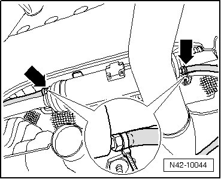

Procedures
Separable Stabilizer Bar, Bleeding
Special tools, testers and auxiliary items required
• Vehicle diagnostic, test and information system (VAS 5051)
• Transparent plastic tube, inner diameter 6 mm, approximately 1 m in length
- Depressurize hydraulic system using the.
- Check oil level in the motor pump assembly. Refer to --> [ Separable Stabilizer Bar Hydraulic System, Checking Oil Level and Filling ] Rear Suspension.
- Connect hose to bleeder nipples - arrows -.

- Secure hose on bleeder nipples using cable ties or hose clamp.
• Due to high pressure, hose would slide from bleeder nipples during bleeding without this securing measure.
- Loosen bleeder nipple by approximately 1 turn.
- Follow instructions on the.
- Tighten bleeder nipple and remove hose.
- Check oil level in motor pump assembly again. Refer to --> [ Separable Stabilizer Bar Hydraulic System, Checking Oil Level and Filling ] Rear Suspension.